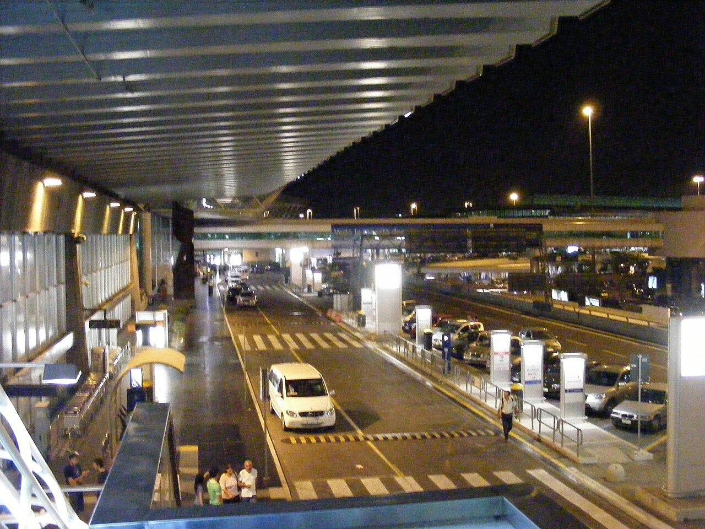

הנחיתה, ההסעה והרכבים
שמונה שעות שכולן לוגיסטיקה, בלי שום אטרקציה — ודווקא לכן הן החלק שהשתלם ביותר לסגור מראש. הכל כבר מוזמן; מה שנשאר זה לדעת לאן ללכת ולמי להתקשר.
🗺️ הנקודות של הלילה הזה📍 נקודת המפגש עם המיניוואן 🔗
ההוראה ממקום הלינה על איזור המפגש.
להתקשר למקום ברגע שיוצאים מהטרמינל.
תשעה צריכים תשעה מושבים, ובאיטליה ילד מתחת ל-150 ס״מ חייב אמצעי ריסון מותאם — כלומר גם הקטנה צריכה מושב, לא ברכיים.
מיניוואן שהוזמן ל-8 עשוי להיות רכב של 8 מקומות. לוודא שהרכב מכיל תשעה מקומות. כיסאות בטיחות ←
צריך לעלות קומה, מחוץ ליציאה 4 של אולם הנכנסים יש דרגנוע שעולה ישירות לרמת היציאות, ובקומה למעלה הוא מגיע למדרכה במרווח שבין כניסה 4 לכניסה 5.
- נוחתים 00:45 בטרמינל 3. ביקורת גבולות ומזוודות.
- יוצאים מאולם הנכנסים ביציאה 4 (היציאות שם ממוספרות 1–6).
- מתקשרים למקום ואומרים שיצאתם. הטלפונים למטה ↓
- מיד מחוץ לדלת: הדרגנוע לרמת היציאות — או מעלית, אם נוח יותר עם המזוודות.
- למעלה יוצאים אל המדרכה. הדרגנוע נוחת בין כניסה 4 לכניסה 5 — דלת 4 היא הסמוכה.
- מחפשים מיניוואן עם הלוגו PARKING BLU.


מה עושים אם המיניוואן לא שם, ואם הטיסה נוחתת בטרמינל 1
אם אין מיניוואן מול דלת 4: מתקשרים שוב ונשארים במקום — דלת 4 היא נקודה מוסכמת, ואם שני הצדדים מתחילים לנדוד לאורך החזית איש לא נמצא. אחרי זה, המקום השני להסתכל בו הוא נקודת האיסוף הרשמית של השדה, שנמצאת בין כניסה 1 לכניסה 2 — הקצה של טרמינל 3 שצמוד לטרמינל 1.
אם הטיסה נוחתת בטרמינל 1 ולא ב-3: טרמינל 1 ו-3 צמודים ומחוברים במעבר להולכי רגל — כ-420 מ׳, בערך 10 דקות הליכה. טרמינל 3 הוא הטרמינל של הטיסות מחוץ למרחב שנגן, ולכן טיסה מתל אביב אמורה לנחות בו. ובכל זאת, הכרטיס ביום הטיסה הוא התשובה הסופית.
לצלם מראש למסך הטלפון, ולא להסתמך על קליטה: הטלפונים למטה · המשפט "Departure level, Terminal 3, door 4 — PARKING BLU" · ושתי הכתובות של המקום. אם הטלפון מתרוקן בטיסה, זה מה שמראים למאבטח או לנהג מונית.
״PARKING BLU״ הוא הלוגו על הרכב, לא דלפק בטרמינל. זה שם החניון שמפעיל את המקום שבו אנחנו ישנים — אין מה לחפש שלט כזה בתוך הבניין.
הצד הציבורי של הטרמינלים פתוח 24 שעות, והמדרכה עצמה היא כביש פתוח — אין שער שנסגר בלילה. (זה לפי מדריך נסיעות מוכר; הצהרה רשמית של רשות שדות התעופה על שעות הפתיחה של המדרכה לא נמצאה.)
☎️ למי מתקשרים 🔗
לפי אישור ההזמנה, לא מופיע באתר. שלושת המספרים שלמטה הם של החברה שמפעילה את המקום ואת ההסעות, והם פורסמו באתר שלה — הם הגיבוי, ולא התחליף.
הגיבוי — המספרים המפורסמים של המפעילה (Parking Blu):
המספר הנייד הוא זה שיש לו גם WhatsApp — וזו הדרך הטובה יותר בלילה: אפשר לשלוח מיקום, וזה עובד גם על Wi-Fi של השדה אם ה-eSIM מתעקש. מקור: האתר של Parking Blu, אומת ספטמבר 2026.
🛏️ הלינה — Il Nido dei Merli 🔗
דירות באזור פיומיצ׳ינו, שתי דירות באותה קומה. המקום גם מפעיל את שתי ההסעות (הוא שייך לחניון Parking Blu שליד השדה).
פותר גם את ההגעה בלילה וגם את איסוף הרכבים בבוקר.
להחזיק בהישג יד: דרכונים וכרטיס אשראי — מה שנדרש בצ׳ק-אין רגיל.
מה עוד סגור, ומה נשאר לבוקר
הצ׳ק-אאוט הוא 10:00, וההסעה של הבוקר יוצאת ב-08:00. בוקר ואיסוף הרכבים ←
הכתובת: הצ׳ק-אין נסגר בתוך ההסעה והנהג לוקח אותנו ישירות. לשמור בטלפון את הכתובת שמופיעה באישור ההזמנה, למקרה שצריך מונית או ניווט עצמאי. מרחקים מטרמינל 3: 3.7–7.3 ק״מ, כ-6–10 דקות נסיעה. מהמקום לדרוטה ~190 ק״מ / ~2:15–2:25.
לול לתינוק — יש חינם לגילי 0–3. אם ירצו אותו לקטנה במקום שתישן במיטת ההורים, זו בקשה בהזמנה.
🚗 בוקר: הסעה לשניים ואיסוף הרכבים ב-Goldcar 🔗
שני נהגים חוזרים לשדה ב-08:00, אוספים את שני הרכבים ונוסעים איתם בחזרה למקום. ככה שאר החבורה ישנה עוד שעה, מתארגנת בשקט ולא גוררת מזוודות דרך מתחם השכרת רכב. שתי המשפחות הזמינו ב-Goldcar, איסוף ב-FCO.
- מטרמינל 3: יוצאים מהנכנסים, פונים שמאלה, מעלית ליד בית הקפה Semplicemente Roma לקומה 2 → Parking B, קומה 4.
- מטרמינל 1: יוצאים מהנכנסים, פונים ימינה, שילוט ל-Rent a Car, ובדלפק המודיעין מעלית מימין לקומה 2 → Parking B, קומה 4.
הרכב שמור עד שש שעות מהשעה שבהזמנה — כלומר עד ~15:00.
⚠️ +39 050 807 5174 שמופיע באישור ההזמנה הוא מוקד השירות הארצי, לא התחנה.
- קבוצה E, אוטומט, Seat Arona או דומה — 5 מקומות, 5 דלתות, מיזוג.
- תא מטען: ~3 מזוודות לרכב לפי היצרן.
- מדיניות דלק Full/Full — מקבלים מלא, מחזירים מלא. לתדלק לפני ההחזרה, אחרת משלמים מחיר תחנה של Goldcar.
- Super Relax Cover כלול, פיקדון €100. בנוסף נתפס פיקדון דלק נפרד — הסכום שלו לא מפורסם.
- הרכב מבוטח לנהיגה באיטליה בלבד.
והכרטיס חייב להיות על שם הנהג הראשי שבחוזה. בלי זה הם רשאים לא למסור את הרכב, ובלי החזר על מה ששולם מראש.
מה לקחת לאיסוף, ומה בודקים לפני שיוצאים מהחניון
לקחת:
* רישיון נהיגה (בתוקף לפחות שנה).
* כרטיס האשראי שעליו נעשתה ההזמנה, הדרכונים, ואת מספרי ההזמנה.
* רישיון בינלאומי (IDP).
✅ סגרנו: ההסעה לשדה ב-08:00; הרשמה ל-Key’n Go; והצ׳ק-אין המקוון נעשה והמסמכים אושרו מראש.
⚠️ באיטליה עדיין מאמתים את המסמכים פיזית בדלפק — מה ש-Key’n Go קונה הוא תור מהיר, לא דילוג. להירשם בתור מיד עם ההגעה.
לצלם את הרכב לפני היציאה — סביב־סביב, גלגלים, שמשה, פנים, מד דלק ומד ק״מ. נוהל ההחזרה ←
לבדוק שיש: וסט זוהר ומשולש (חובה חוקית באיטליה), ושמסמכי הרכב בתא הכפפות. כיסאות בטיחות ←
הפרטים למעלה הם מאישור ההזמנה ומתנאי השכירות המצורפים לו (Goldcar Italy, תחנת FCO).
לא פורסמו: שעות הפתיחה של התחנה, סכום פיקדון הדלק, ההשתתפות העצמית, ומגבלת הקילומטרים.
🛣️ הנסיעה לאומבריה, ואיפה עוצרים 🔗
יוצאים סביבות 10:00–10:30. הנסיעה עצמה פשוטה וברובה כבישים מהירים, הזדמנות לקנייה הגדולה.
המסלול ועצירה
המסלול: מ-FCO אל כביש A1 צפונה, יציאה באזור אורטה, ומשם מזרחה לכיוון פרוג׳ה בכביש המהיר E45.
הקטע ב-A1 הוא כביש אגרה.
העצירה: סופרמרקט גדול באזור פרוג׳ה או טודי, לא בכפר. שם יש גם מדף senza glutine אמיתי. מה קונים ואיפה ←
אם צריך — עוצרים לקפה בתחנת דרך (autogrill), הן טובות באיטליה ופתוחות תמיד. הצ׳ק-אין בדרוטה לא בורח.